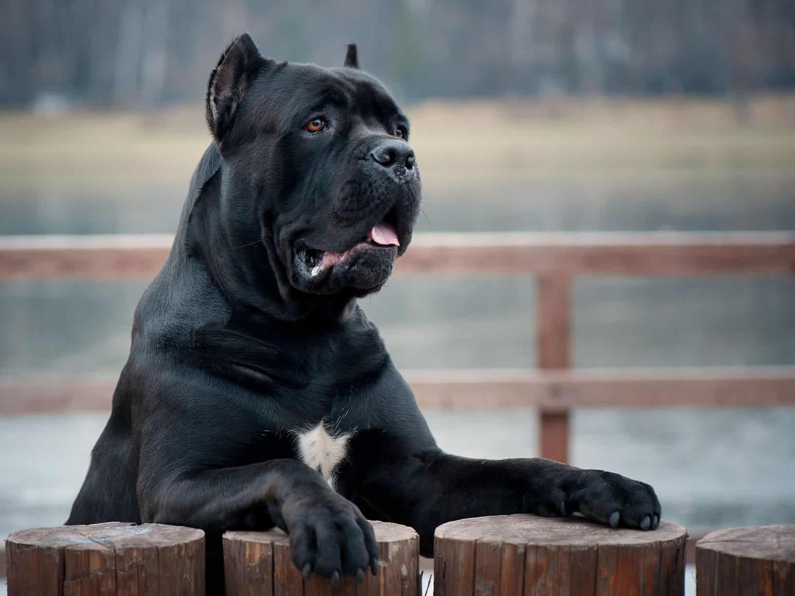
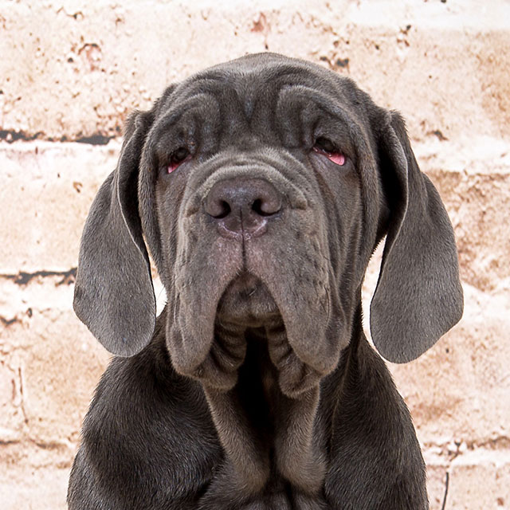
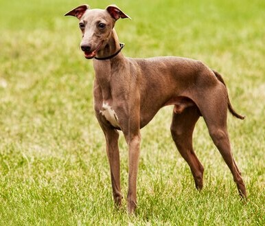

Cane Corso
A sua velocidade, aliada à agilidade, era utilizada na Idade Média para a caça a cavalo e de animais de grande porte como o javali. Forte, corajoso e rápido o Cane Corço é um extraordinário auxiliar de caça. Não espere que ele seja amigo com todos os que encontra: não tem interesse em pessoas ou em outros animais fora sua família, mas aqueles que são da família terão a sua lealdade e proteção incondicional. Ele é um cão ativo e precisa de algo para gastar a sua energia senão vai tornar-se inquieto.
| Expectativa de Vida | Altura | Peso | |
|---|---|---|---|
| Mínimo | 10 Anos | 54 cm | 24 kg |
| Máximo | 13 Anos | 61 cm | 32 kg |
Mastim Napolitano
Geralmente equilibrado, inteligente, calmo e determinado, este cão resistente foi usado em várias lutas no passado. É um bom guardião, muito vigilante mas o seu ar bondoso não deve iludir, pois ele tende a ser agressivo com pessoas que não conhece. Não é recomendável adestrá-lo para o ataque uma vez que este cão, é temível por causa da sua massa corporal, das suas mandíbulas, mas também da sua agilidade. É um animal que dificilmente suporta estar em espaços fechados, precisando de tempo ao ar livre.
| Expectativa de Vida | Altura | Peso | |
|---|---|---|---|
| Mínimo | 8 Anos | 65 cm | 50 kg |
| Máximo | 10 Anos | 70 cm | 60 kg |
Galguinho Italiano
Este cão, o menor de todos os galgos, é um pouco reservado, embora dócil e carinhoso, atributos que são atualmente muito procurados. Tem uma notável elegância e distinção, qualidades que lhe valeram um número crescente de admiradores ao longo da última década. O seu temperamento gentil, brincalhão e muito afectuoso faz do Galgo Italiano um cão de companhia exemplar. É muito sensível pelo que precisa de se sentir amado e respeitado. Apesar da sua elegância, este cão irá testar a sua paciência com persistência até conseguir o que quer.
| Expectativa de Vida | Altura | Peso | |
|---|---|---|---|
| Mínimo | 12 Anos | 32 cm | 10 kg |
| Máximo | 15 Anos | 38 cm | 15 kg |